第3回：▼ 連続な曲線を描く
■ Jupyter notebook によるテキストの入力
Jupyter notebook のセルには、複数の種類(Cell type)がある。
既定のセルの Cell type は、Code である。 プログラム片を入力して、SHIFTキーとENTERキーを同時に押して実行すると、 出力セルに実行結果が表示される。
Cell type を Markdown に変更すると、 Markdown 記式によるテキストを入力できる。
Markdown 記式でテキストを入力し、 SHIFT+ENTERを押して実行すると、 Markdown記式で整形された文書が表示される。
Markdown記法では、空行が段落の区切りである。 空行をはさまない行替えは、前の行に続けて、同じ段落に配置される。
文字列の飾りは、たくさん使用しない方がよい。
URLリンクを書くには、次のように記述する。 [ 表示名 ]( URL )
例
[Julia 0.6 Documentation](https://docs.julialang.org/en/v0.6/)
Markdown記法では、数式を挿入することができる。 ダラー記号 $ 一つで囲まれた数式は行内数式 (inline math)、 ダラー記号 $ 二つで囲まれた数式は別行立て数式 (display math)である。 数式そのものは LaTeX 記法で記述する。 いくつか例を示す。
- 数式内の文字は変数とみなされ、斜体で表される。
$x+1$→ $x+1$ - 上付き
$x^{2}$→ $x^{2}$ - 下付き
$x_{3}$→ $x_{3}$ - 分数
$\dfrac{a}{b}$→ $\dfrac{a}{b}$ - 関数
$f(x) = x^{2}+1$→ $f(x) = x^{2}+1$ - 三角関数
$\sin{x}, \tan{x}$→ $\sin{x}, \tan{x}$ - 指数対数関数
$\exp{x}, \log{x}$→ $\exp{x}, \log{x}$ - テキスト内の立体 (roman style)
$a\;\mathrm{over}\;b$→ $a\;\mathrm{over}\;b$ - 総和
$\sum_{i=0}^{m}i$→ $\sum_{i=0}^{m}i$ - 総和を「行立て」する
$$\sum_{i=0}^{m}i$$→
- 積分
$\int_{0}^{1}x dx$→ $\int_{0}^{1}x dx$ - 積分を「行立て」する
$$\int_{0}^{1}x dx$$→
- カッコのペア
$\left[\left\{\left( \dfrac{1}{2} \right)\right\}\right]$→ $\left[\left\{\left( \dfrac{1}{2} \right)\right\}\right]$
▼ 定義域・値域
関数 $y=f(x)$ の定義域(domain)とは、 独立変数 (independent variable) $x$ の取りうる値からなる集合である。ちなみに、従属変数 (dependent variable) $y$ が取りうる値からなる集合を、値域 (range)という
本章では、 定義域が実数全体、あるいは、正の数の集合である関数について、 グラフを描いてみる。
▶ 定数 pi
定数 pi は円周率である。
julia> pi
π = 3.1415926535897...▼ 正弦関数・余弦関数を描く
- 正弦 $y = \sin{x}$
- 余弦 $y = \cos{x}$
ラジアン単位
引数がラジアン単位の正弦、余弦 sin, cos
julia> sin(pi/6)
0.49999999999999994
julia> cos(pi/6)
0.8660254037844387cos.() や sin.() のように、関数名の直後にピリオド . を入れると、 ベクトルやRange型を引数にとり、計算結果をベクトルで返す。
julia> xs = [ pi/4, pi/6, pi/2 ];
julia> sin.(xs)
3-element Array{Float64,1}:
0.7071067811865475
0.49999999999999994
1.0
julia> cos.(xs)
3-element Array{Float64,1}:
0.7071067811865476
0.8660254037844387
6.123233995736766e-17Range型の引数を与えて、グラフを描く。
using PyPlot
xs=-2pi:pi/360:2pi
plt.plot(xs, cos.(xs), label="cos")
plt.plot(xs, sin.(xs), label="sin")
plt.xlabel("radian")
plt.legend()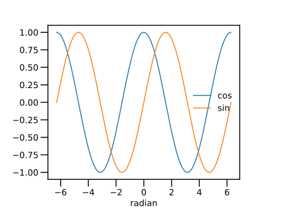
円周率単位
引数が円周率単位の正弦、余弦 sinpi, cospi
using PyPlot
xs=-2:1/360:2
plt.plot(xs, cospi.(xs), label="cospi")
plt.plot(xs, sinpi.(xs), label="sinpi")
plt.xlabel("pi")
plt.legend()角度単位
引数が角度単位の正弦、余弦 sind, cosd
using PyPlot
xs=-360:1:360
plt.plot(xs, cosd.(xs), label="cosd")
plt.plot(xs, sind.(xs), label="sind")
plt.xlabel("degree")
plt.legend()ラジアンと角度との相互変換
julia> # rad2deg
rad2deg(pi/4)
45.0
julia> rad2deg(pi/2)
90.0
julia> rad2deg(pi)
180.0
julia> rad2deg(-pi/4)
-45.0
julia> # deg2rad
deg2rad(45)
0.7853981633974483
julia> deg2rad(90)
1.5707963267948966
julia> deg2rad(180)
3.141592653589793
julia> deg2rad(-45)
-0.7853981633974483▼ 楕円を描く
楕円を陰関数で表示すると
楕円を媒介変数表示(パラメータ曲線)すると
媒介変数表示を用いて、楕円上の各点の座標を計算する。
アスペクト比を等しくして、正しい図形を表示しよう。
using PyPlot
plt.axes().set_aspect("equal")
ts=0:pi/18:2pi
xs=2*cos.(ts)
ys=sin.(ts)
plt.plot(xs,ys)
plt.xlim(-3,3)
plt.ylim(-3,3)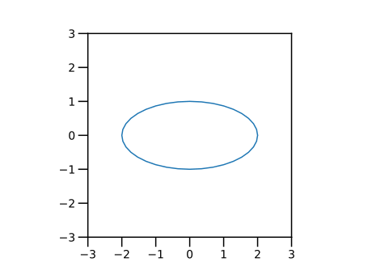
▼ アルキメデスの渦を描く
平面座標上の点 $(x,y)$は、極座標 $(r, \theta)$ でも表示できる。 平面座標 $x,y$と極座標 $r, \theta$ との対応は
である。
次の関係で結ばれた曲線を、アルキメデスの渦という。
これを描いてみよう。
using PyPlot
plt.axes().set_aspect("equal")
ts=0:pi/1800:2pi
xs=ts .* cos.(ts)
ys=ts .* sin.(ts)
plt.plot(xs, ys)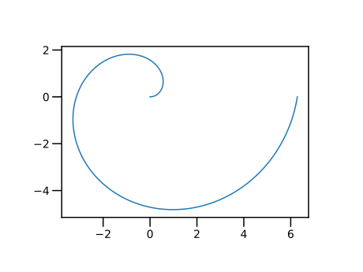
▲ 練習
上では $\theta \ge 0$ の範囲で、曲線を描いた。 パラメータ $\theta < 0$ の範囲まで含めたら、どのような曲線になるか？ 予想した上で、プログラムを書き実行し、確かめてみよ。 予想と一致していたか？
▼ 花曲線を描く
flower curve
using PyPlot
plt.axes().set_aspect("equal")
n=3
ts=0:pi/1800:2pi
rs=cos.(n*ts)
xs=rs .* cos.(ts)
ys=rs .* sin.(ts)
plt.plot(xs, ys)▼ 指数関数を描く
正の数 $a > 0$を底(exponent)とする指数関数(exponential function)
底 $a=2$の場合。
using PyPlot
xs=-10:0.01:10
plt.plot(xs, 2.0.^xs)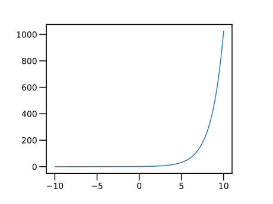
底を $2,3,4.5$と変えてみる。$x > 0$ の範囲のみ描く。
plt.plot(xs, 2.0.^xs)
plt.plot(xs, 3.0.^xs)
plt.plot(xs, 4.0.^xs)
plt.plot(xs, 5.0.^xs)
plt.xlim(0,3)
plt.ylim(0,100)凡例(legend）を加える。
plt.plot(xs, 2.0.^xs, label="a="*string(2))
plt.plot(xs, 3.0.^xs, label="a="*string(3))
plt.plot(xs, 4.0.^xs, label="a="*string(4))
plt.plot(xs, 5.0.^xs, label="a="*string(5))
plt.plot(xs, 6.0.^xs, label="a="*string(6))
plt.legend()
plt.xlim(0,3)
plt.ylim(0,100)
▲ 練習
上のプログラムを、for文を用いた繰り返しとして書き直してみよ。 すなわち、plt.plot() 文を一つにしてみよ。
参考→ ■ for文
▶ 自然対数の底
定数 ℯ は、自然対数の底である。
julia> ℯ
ℯ = 2.7182818284590...ℯ は eとは異なる文字である。 「ℯ」は、バックスラッシュ \ に続けて euler と入力してから、TABキーを押すことによって入力できる。
定数 Base.MathConstants.e も、自然対数の底である。
julia> Base.MathConstants.e
ℯ = 2.7182818284590...▶ 軸のスケールを変える
x軸、y軸のスケールを指定するには、関数 xscale, yscale を用いる。 何も指定しない場合（既定値）は、線形 linear である。 引数に log を指定すると、10の対数で、その軸を描く。
y軸だけ対数スケール yscale("log") に指定したグラフが、よく見る片対数グラフである。
for a in [2.0,ℯ,3.0,4.0,5.0,6.0]
plt.plot(xs, a.^xs, label="a="*string(a))
end
plt.yscale("log")
plt.xlim(-1,3)
plt.ylim(1e-1,1e3)
plt.legend()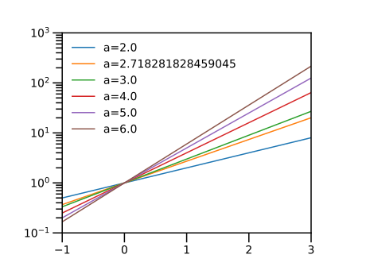
全ての底について、指数関数は $a^0=1=10^0$ で交わることを観察するために補助線を引こう。
以下の文を追加する。
plt.axvline(0, color="k", lw=0.5)
plt.axhline(1, color="k", lw=0.5)▶ 関数 exp, exp2, exp10
底 $2, e, 10$ については、expで始まる関数が定義されている。
exp2: 底が 2 の指数関数exp: 自然対数 (底は、自然対数の底)exp10: 底が 10 の指数関数
plt.plot(xs, exp2.(xs), label="exp2")
plt.plot(xs, exp.(xs), label="exp")
plt.plot(xs, exp10.(xs), label="exp10")
plt.yscale("log")
plt.xlim(-1,3)
plt.ylim(1e-1,1e3)
plt.legend()
plt.axvline(0, color="k", lw=0.5)
plt.axhline(1, color="k", lw=0.5)
関数も名前であり、名前をつけること(=変数に代入すること）ができる。 関数のリストを作って for文で繰り返してみよう。 関数名を string関数に与えると、関数名の文字列を返す。
for f in [exp2,exp,exp10]
plt.plot(xs, f.(xs), label=string(f))
end
plt.yscale("log")
plt.xlim(-1,3)
plt.ylim(1e-1,1e3)
plt.legend()
plt.axvline(0, color="k", lw=0.5)
plt.axhline(1, color="k", lw=0.5)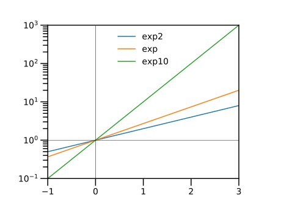
▼ 平方根を描く
二乗すると$x$になる数を、$x$の平方根 (square root of $x$)という。 関数 sqrt(x)は xの平方根を求める関数である。
julia> sqrt(0)
0.0
julia> sqrt(2)
1.4142135623730951
julia> sqrt(3)
1.7320508075688772負の数 $x < 0$を関数sqrtの引数（ひきすう)に与えると、 例外（exception)が発生する。 が、複素数を引数として与えると、複素数として計算できる（複素数は、もっと後の回で説明する）。 → ▶ 負の数に対する平方根
julia> sqrt(-1) # DomainError
ERROR: DomainError with -1.0:
sqrt will only return a complex result if called with a complex argument. Try sqrt(Complex(x)).
julia> sqrt(complex(-1,0)) # 複素数を引数に与える
0.0 + 1.0im平方と平方根を同じグラフに描いてみよう。 直線 $y=x$ に対して、鏡の関係になっている。
using PyPlot
plt.axes().set_aspect("equal")
xs=0:0.01:3
plt.plot(xs, xs.^2, label="square")
plt.plot(xs, sqrt.(xs), label="square root")
plt.plot(xs, xs, "k", lw=0.5, label="y=x")
plt.xlim(-0.2,2.2)
plt.ylim(-0.2,2.2)
plt.xlabel("x")
plt.ylabel("y")
plt.legend()
plt.axvline(1, color="k", lw=0.5)
plt.axhline(1, color="k", lw=0.5)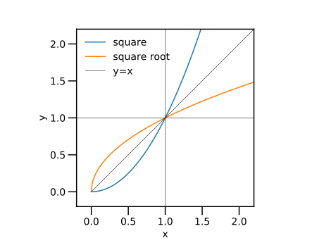
▼ 立方根を描く
三乗すると$x$になる数を、$x$の立方根 (cube root of $x$)という。 関数 cbrt(x)は xの立方根を求める関数である。
立方と立方根を同じグラフに描いてみよう。 直線 $y=x$ に対して、鏡の関係になっている。
using PyPlot
plt.axes().set_aspect("equal")
xs=0:0.01:3
plt.plot(xs, xs.^3, label="cubic")
plt.plot(xs, cbrt.(xs), label="cube root")
plt.plot(xs, xs, "k", lw=0.5, label="y=x")
plt.xlim(-0.2,2.2)
plt.ylim(-0.2,2.2)
plt.xlabel("x")
plt.ylabel("y")
plt.legend()
plt.axvline(1, color="k", lw=0.5)
plt.axhline(1, color="k", lw=0.5)
平方と平方根、立方と立方根を、同じグラフに描こう。 点$(1,1)$で、曲線が交差している。
using PyPlot
plt.axes().set_aspect("equal")
xs=0:0.01:3
plt.plot(xs, xs.^2, label="square")
plt.plot(xs, sqrt.(xs), label="square root")
plt.plot(xs, xs.^3, label="cube")
plt.plot(xs, cbrt.(xs), label="cube root")
plt.plot(xs, xs, "k", lw=0.5, label="y=x")
plt.legend()
plt.xlim(-0.2,2.2)
plt.ylim(-0.2,2.2)
plt.xlabel("x")
plt.ylabel("y")
plt.axvline(1, color="k", lw=0.5)
plt.axhline(1, color="k", lw=0.5)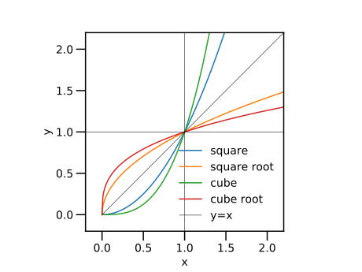
平方根と立方根の関数のリストを作って for文で繰り返してみよう。 （結果のグラフは、上と同じなので省略する）
using PyPlot
plt.axes().set_aspect("equal")
xs=0:0.01:3
for f in [ sqrt, cbrt]
plt.plot(xs, f.(xs), label=string(f))
end
plt.legend()
plt.xlim(-0.2,2.2)
plt.ylim(-0.2,2.2)
plt.xlabel("x")
plt.ylabel("y")
plt.axvline(1, color="k", lw=0.5)
plt.axhline(1, color="k", lw=0.5)▼ 冪乗根を描く
一般に、正数 $x > 0$ と $2$以上の整数$n$ に対して、$y^n = x$ の解、 すなわち、$y = \sqrt[n]{x} = x^{\frac{1}{n}}$を、$x$の$n$乗根 (root of $n$-th power, $n$-th root)という。$n$を指定せずに、冪乗根（べきじょうこん）あるいは冪根（べきこん）と総称する。 「冪」の代わりに「巾」の略字を当てることもある。
PyPlotパッケージに用意された関数 axvline()で垂直線 (vertical line)を描く。引数は、前回説明した関数 axhline (水平線を描く)と同じである。
using PyPlot
plt.axes().set_aspect("equal")
xs=0:0.01:3
plt.plot(xs, xs.^(1/2), label="n=2")
plt.plot(xs, xs.^(1/3), label="n=3")
plt.plot(xs, xs.^(1/4), label="n=4")
plt.plot(xs, xs.^(1/5), label="n=5")
plt.legend()
plt.xlim(-0.2,2.2)
plt.ylim(-0.2,2.2)
plt.axhline(1, color="k", lw=0.5)
plt.axvline(1, color="k", lw=0.5)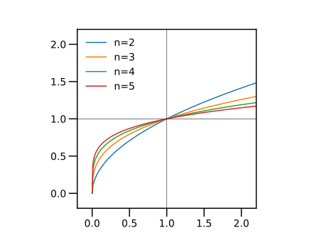
指数$n$で繰り返してみる。
using PyPlot
xs=0:0.01:10
for n in 2:5
plt.plot(xs, xs.^(1/n), label="y=x^(1/" * string(n) *")" )
end
plt.legend()
plt.xlabel("x")
plt.ylabel("y")
plt.xlim(0.1,10.)
plt.ylim(0.1,10.)
plt.xscale("log")
plt.yscale("log")
plt.axhline(1, color="k", lw=0.5)
plt.axvline(1, color="k", lw=0.5)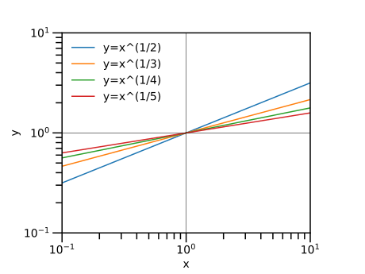
▼ 自然対数
正の数 $x>0$に対して、$x=e^y$ を満たす数 $y$を、$x$の自然対数 (natural logarithm of $x$、Napierian logarithm、あるいは単に、logarithm）といい、$\log{x}$ と書く。
関数 log(x)は、自然対数を求める関数である。
julia> log(1)
0.0
julia> log(ℯ)
1
julia> log(ℯ^2)
2.0数学と同様、負の数に対する対数関数は定義されていない。引数に負数を与えると例外が起こる。
julia> log(-1) # DomainError
ERROR: DomainError with -1.0:指数関数を、まず線形なグラフで描く。
using PyPlot
xs=0.1:0.01:100
plt.plot(xs, log.(xs))今度は、片対数グラフで描く。$x$ 軸を対数で表示すると、直線で表示される。
plt.plot(xs, log.(xs))
plt.xscale("log")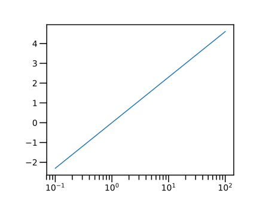
▼ 対数関数
正の数 $a$に対して、$x=a^y$ を満たす数$y$を、底$a$に対する $x$の対数 ( logarithm of $a$ to base b; base $a$ logarithm of $x$）といい、$\log_{a}{y}$と書く。
関数 log(a,y)のように、引数（ひきすう）二つを与えると、 底 $a$に対する $x$の対数が得られる。
片対数グラフを描く。$\log_{a}{1}=0$で曲線が交差する。
plt.plot(xs, log.(2,xs), label=string(2))
plt.plot(xs, log.(xs), label=string(ℯ))
plt.plot(xs, log.(3,xs), label=string(3))
plt.plot(xs, log.(10,xs), label=string(10))
plt.xscale("log")
plt.axhline(0, color="k", lw=0.5)
plt.axvline(1, color="k", lw=0.5)
plt.legend()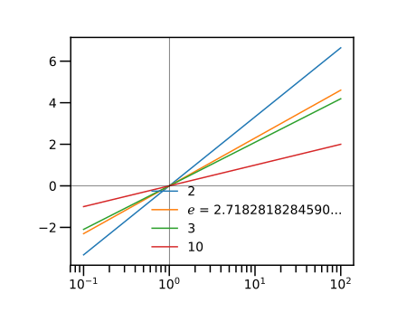
底をfor文で変えてみる。
for a in [2, ℯ, 3, 10]
plt.plot(xs, log.(a,xs), label=string(a))
end
plt.xscale("log")
plt.axhline(0, color="k", lw=0.5)
plt.axvline(1, color="k", lw=0.5)
plt.legend()底 $2$ と $10$ に対しては、それぞれ関数 log2と log10 が用意されている。
plt.plot(xs, log2.(xs), label="log2")
plt.plot(xs, log.(xs), label="log")
plt.plot(xs, log10.(xs), label="log10")
plt.xscale("log")
plt.legend()
plt.axhline(0, color="k", lw=0.5)
plt.axvline(1, color="k", lw=0.5)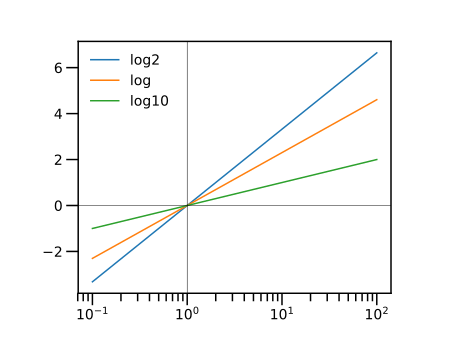
関数名で繰り返してみる。
for f in [log2, log, log10]
plt.plot(xs, f.(xs), label=string(f))
end
plt.xscale("log")
plt.legend()
plt.axhline(0, color="k", lw=0.5)
plt.axvline(1, color="k", lw=0.5)▼ ダブルYグラフを描く
ダブルYグラフは、 $x$軸を共通として、左と右に、二つの $y$軸を配置するグラフである。
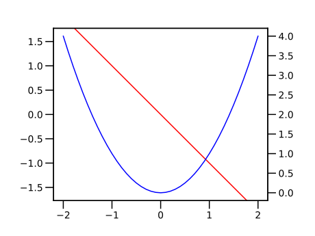
これを描くには、次の手順をとる。 まず、以下のように、 元となる座標系(左$y$軸)のデータ（オブジェクト）ax1を取得する。
# fig=plt.figure()
# ax1=fig.add_subplt.plot(111)
fig, ax1 = plt.subplots()
# plt.axes().set_aspect("equal") # hide
ax1.set_aspect("equal") # hide次に、以下のように、 $x$軸が共通な、新しい座標系(右$y$軸)のデータ（オブジェクト）ax2を作成する。
ax2=ax1.twinx()座標系 axに対して描画するには、ax.plot(<<plot引数>>) の形式を用いる。
using PyPlot
xs=-2:0.1:2
# fig=plt.figure()
# ax1=fig.add_subplt.plot()
fig, ax1 = plt.subplots()
ax1.set_aspect("equal")
# fig,ax1=plt.axes().set_aspect("equal")
ax1.plot(xs, -xs, "r")
ax2=ax1.twinx()
ax2.plot(xs, xs.^2, "b")▼ 自由落下運動を描く
(力学の問題)
鉛直上向きに投げられた球が、重力のみを感じて自由落下するとする。 時刻 $t=0$において、高さ $y=0$, 鉛直上向きの速度 $v_0$ とすると、 時刻 $t$における、高さ $y$と 鉛直上向きの速度 $v$ は、以下のように表される。
各時刻の速度を描く。 長さの単位としてメートル m、 時間の単位として秒 s を、(組立て単位を含めて)一貫して用いる。
重力加速度 $g = 9.8\;\mathrm{m/s^2}$
初速度を $v0 = 10\;\mathrm{m/s}$ としよう。
各時刻の速度を描く。
using PyPlot
v0=10 # m/s
g=9.8 # m/s^2
ts=0:0.1:3 # s
vs=v0 .- g*ts
plt.plot(ts,vs)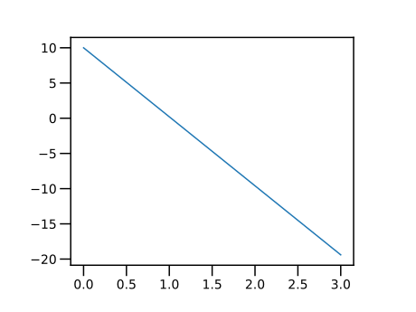
各時刻の高さを描く。
ys=v0*ts .- g*ts.^2/2
plt.plot(ts,ys)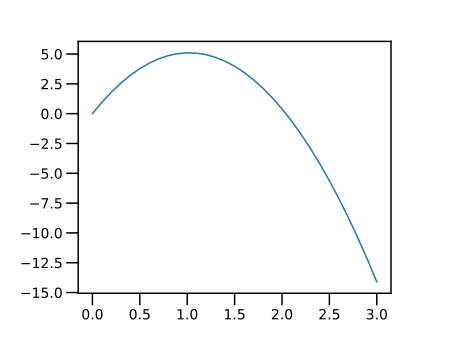
この二つのグラフを、時刻を、共通の横軸にとって描こう。
# ax1=plt.subplots()
fig, ax1 = plt.subplots()
ax1.plot(ts,vs)
ax2=ax1.twinx()
ax2.plot(ts,ys)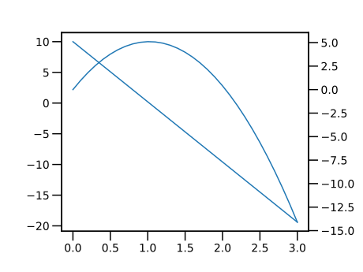
各軸に対して、描画範囲を指定する。 各軸オブジェクトに対して関数 set_xlim( または set_ylim( を用いる。 (関数 plt.xlim( または plt.ylim( は、軸オブジェクトに対して用いない)
共通な下軸に対しては、元の軸オブジェクト $ax1$に対して指定する。 左軸、右軸は、各軸のオブジェクトに対して指定する。
各軸にラベルをつけるには、 各軸オブジェクトに対して関数 set_xlabel( または set_ylabel( を用いる。 (関数 plt.xlabel( または plt.ylabel( は、軸オブジェクトに対して用いない)
ax1.set_xlabel("time / s")
ax1.set_xlim(-0.3,2.3)
ax1.set_ylim(-12,12)
ax2.set_ylim(-6,6)
ax1.set_ylabel("velocity / m s^-1")
ax2.set_ylabel("height / m")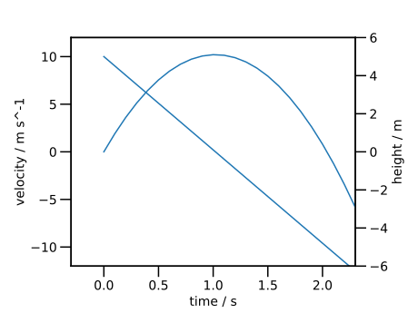
各軸に対して、水平線 axvline や垂直線 axvline を描く。
時刻 $\dfrac{v0}{g}$ で、速度が 0 となり、最大の高さを取る様子が見える。
ax1.axvline(v0/g, color="k", lw=0.5)
ax1.axvline(0, color="k", lw=0.5)
ax1.axhline(0, color="k", lw=0.5)▲ 練習
初速度 v0 を変えて描いてみよ。
●▼ ダブルYグラフに共通な凡例の作成
複数軸に共通な凡例を描くには、技巧が少々必要である。
まず、前節のプログラムをまとめて書こう。 二つの曲線に、色を指定しよう。
using PyPlot
# ax1=plt.subplots()
fig, ax1 = plt.subplots()
ax2=ax1.twinx()
ax1.plot(ts,vs, "b", label="velocity")
ax2.plot(ts,ys, "r", label="height")
ax1.set_xlabel("time / s")
ax1.set_xlim(-0.3,2.3)
ax1.set_ylim(-12,12)
ax2.set_ylim(-6,6)
ax1.set_ylabel("velocity / m s^-1")
ax2.set_ylabel("height / m")
ax1.axvline(10/9.8, color="k", lw=0.5)
ax1.axvline(0, color="k", lw=0.5)
ax1.axhline(0, color="k", lw=0.5)各軸に含まれる曲線の形状と凡例を、 get_legend_handles_labels 関数を用いて、取り出す。
二つの軸に含まれる形状と凡例を、それぞれ結合する。 片方の軸に対して、結合した形状と凡例を追加する。
lns1, lbl1 = ax1.get_legend_handles_labels()
lns2, lbl2 = ax2.get_legend_handles_labels()
lns = [ lns1; lns2 ]
lbls = [ lbl1; lbl2 ]
ax2.legend( lns, lbls, loc=0)▲ 練習
初速度 v0を、色々変えてプロットしてみよ。
▼ プロット領域を縦横に分割する
グラフのプロット領域を縦横に分割するには、以下の命令を用いる。
ax=plt.subplots(ijk)
ijk は３桁の整数である。 百の位 iは、縦方向の分割数、 十の位 jは、横報告の分割数である。 一の位は、取得するプロット番号であり、 左から右、上から下に、1から順に振られる。
▼ 花曲線を描くの例で $n$ を変えて、各プロット範囲に描画する。
using PyPlot
fig,axes=plt.subplots(2,3,figsize=(6.4,4.8))
# ax=plt.subplots(330+i)
ts=0:pi/1800:2pi
for i=1:6
ax=axes[i]
ax.set_aspect("equal")
n=i+2
rs=cos.(n*ts)
xs=rs .* cos.(ts)
ys=rs .* sin.(ts)
ax.plot(xs,ys)
ax.set_xlim(-1,1)
ax.set_ylim(-1,1)
end▲ 練習：斜めに飛ばした球の軌跡
(力学の問題)
鉛直上向きに対して 角度 $b$をつけて投げた球が、重力のみを感じて運動するとき、その球の軌跡を描け。
最初は $b = 15^{\circ}$として描け。
次に、角度$b$を変えた場合を、一つのグラフに示せ。
余裕があれば、Jupyter NotebookのMarkdownセルを用いて、解き方や式などの文飾を加えよ。
▲ 練習：色々な連続曲線を描く
ここまで紹介した関数を使って、色々な連続曲線を描いてみよ。 Jupyter notebookの Markdownセルを用いて、説明文も加えよ。
★ 今回のまとめ
- Jupyter Notebookを用いたテキスト入力 (Markdownセル)
- 実数全域で定義された関数
- 正弦・余弦関数
- 楕円
- 極座標で著された曲線
- アルキメデスの渦
- 花曲線
- 指数関数
- 正数を定義域とする関数
- 平方根・立方根・冪乗根
- 対数関数
- 複数のグラフを描く方法
- ダブルYグラフ
- ダブルYグラフに共通な凡例の作成
- プロットエリアの分割